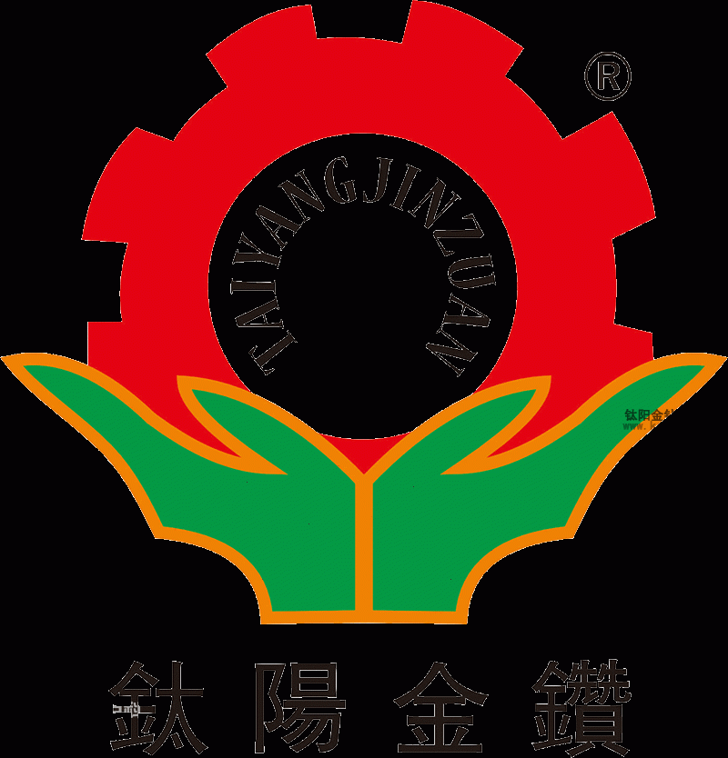

自動化機械的前景與未來自動攻牙機的發展方向
文章出處：鈦陽金鑽責任編輯：kstyjz人氣：發表時間：2015-04-18 10:57
自動化機械的前景與未來自動攻牙機的發展方向
文 / 鈦陽金鑽
機械自動化,主要指在機械製造業中應用自動化技術,實現加工對象的連續自動化生產,優化有效的自動化生產過程,加快生產投入物的加工變換和流動速度、機械自動化技術的應用與發展,是機械製造業技術改造、技術進步的主要手段和技術發展的主要方向。
自動化這個先進製造技術概念的提出為機械製造業的發展指明了方向。雖然這個名詞沒有確定的定義，但目前公認的認識是：先進製造技術是傳統製造技術不斷吸收機械、電子、信息、材料、能源和現代管理等方面的成果，並將其綜合應用於產品設計、製造、檢測、管理、銷售、使用、服務的製造全過程，以實現優質、高效、低耗、清潔、靈活的生產，並取得理想技術經濟效果的製造技術的總稱。它具有如下一些特點：
1． 從以技術為中心向以人為中心轉變，使技術的發展更加符合人類社會的需要。
2． 從強調專業化分工向模糊分工、一專多能轉變，使勞動者的聰明才智能夠得到充分發揮。
3． 從金字塔的多層管理結構向扁平的網絡化結構轉變，減少層次和中間環節。
4． 從傳統的順序工作方式向並行工作方式轉變，縮短工作週期，提高工作質量。
5． 從按照功能劃分部門的固定組織形式向動態的自主管理的小組工作方式轉變。
6． 機械製造技術的發展趨勢可以概括為：（1）機械製造自動化．（2）精密工程測試．（3）傳統加工方法的改進與非傳統加工方法的發展.（4）智能製造系統．（5）計算機輔助設計，製造一體化.
下面對自動化技術給予論述和展望。
機械製造自動化技術始終是機械製造中最活躍的一個研究領域。也是製造企業提高生產率和贏得市場競爭的主要手段。機械製造自動化技術自本世紀20年代出現以來，經歷了三個階段，即剛性自動化、柔性自動化和綜合自動化。綜合自動化常常與計算機輔助製造、計算集成製造等概念相聯繫，它是製造技術、控制技術、現代管理技術和信息技術的綜合，旨在全面提高製造企業的勞動生產率和對市場的響應速度。
一、 集成化
計算機集成製造（CIMS）被認為是21世紀製造企業的主要生產方式。CIMS作為一個由若干個相互聯繫的部分（分系統）組成，通常可劃分為5部分：
1． 工程技術信息分系統
包括計算機輔助設計（CAD），計算機輔助工程分析（CAE），計算機輔助工藝過程設計（CAPP），計算機輔助工裝設計（CATD）,數控程序編製（NCP）(PLC)等。
2． 管理信息分系統（MIS）
包括經營管理（BM），生產管理（PM），物料管理（MM），人事管理（LM），財務管理（FM）等。
3． 製造自動化分系統（MAS）
包括各種自動化設備和系統，如計算機數控（CNC），加工中心（MC），柔性製造單元（FMS），工業機器人（Robot），自動裝配（AA）等。
4． 質量信息分系統
包括計算機輔助檢測（CAI），計算機輔助測試（CAT），計算機輔助質量控制（CAQC），三坐標測量機（CMM）等。
5． 計算機網絡和數據庫分系統（Network & DB）
它是一個支持系統，用於將上述幾個分系統聯繫起來，以實現各分系統的集成。 ６.可編程控制 (PLC)
二、 智能化
智能製造系統可被理解為由智能機械和人類專家共同組成的人機一體化智能系統，該系統在製造過程中能進行智能活動，如分析、推理、判斷、構思、決策等。
在智能系統中，“智能”主要體現在系統具有極好的“軟”特性（適應性和友好性）。在設計和製造過程中，採用模塊化方法，使之具有較大的柔性；對於人，智能製造強調安全性和友好性；對於環境，要求作到無污染，省能源和資源充分回收；對於社會，提倡合理協作與競爭。
三、 敏捷化
敏捷製造是以競爭力和信譽度為基礎，選擇合作者組成虛擬公司，分工合作，為同一目標共同努力來增強整體競爭能力，對用戶需求作出快速反應，以滿足用戶的需要。為了達到快速應變能力，虛擬企業的建立是關鍵技術，其核心是虛擬製造技術，即敏捷製造是以虛擬製造技術為基礎的。敏捷製造是現代集成製造系統從信息集成發展到企業集成的必由之路，它的發展水平代表了現代集成製造系統的發展水平，是現代集成製造系統的發展方向。
實現敏捷製造的技術基礎包括：
1． 大範圍的通訊基礎結構，要求在全國範圍內建立工廠信息網絡和準時信息系統（Just-In-Time-Information）。
2． 柔性化、模塊化的產品設計方法。
3． 高柔性、模塊化、可伸縮的製造系統。
4． 為定單而設計、製造的生產方式。
5． 基於任務的組織與管理。
6． 基於信任的僱傭關係。
四、 虛擬化
“虛擬製造”的概念於20世紀90年代初期提出。虛擬製造以系統建模和計算機仿真技術為基礎，集現代製造工藝、計算機圖形學、信息技術、並行工程、人工智能、多媒體技術等高新技術為一體，是一項由多學科知識形成的綜合系統技術。虛擬製造利用信息技術、仿真計算機技術對現實製造活動中的人、物、信息及製造過程進行全面的仿真，以發現製造中可能出現的問題，在產品實際生產前就採取預防的措施，從而達到產品一次性製造成功，來達到降低成本、縮短產品開發週期，增強產品競爭力的目的。
五、 清潔化
清潔生產是指：將綜合預防的環境戰略，持續應用於生產過程和產品中，以便減少對人類和環境的風險。
清潔生產的兩個基本目標是資源的綜合利用和環境保護。對生產過程而言，清潔生產要求滲透到從原材料投入到產出成品的全過程，包括節約原材料和能源，替代有毒的原材料和短缺資源，二次能源和再生資源的利用，改進工藝及設備，並將一切排放物的數量與毒性削減在離開生產過程之前。對於產品而言，清潔生產覆蓋構成產品整個生命週期的各個階段，即從原材料的提取到產品的最終處理，包括產品的設計、生產、包裝、運輸、流通、銷售及報廢等，合理利用資源，並最大限度地減少對人類和環境的不利影響。
昆山鈦陽金鑽自動化設備有限公司在精密工業發展的道路上願與您攜手，共同進步！路皎15250231221
昆山鈦陽金鑽自動化設備有限公司在精密工業發展的道路上願與您攜手，共同進步！路皎15250231221
上一篇：國內機器人產業與技術遠遠落後於發達國家 | 下一篇：自動攻牙機的工作原理如何選擇自動攻牙機
相關資訊
- 自動化機械的前景與未來自動攻牙機的發'>自動化機械的前景與未來自動攻牙機的發
- 自動攻牙機的工作原理如何選擇自動攻牙'>自動攻牙機的工作原理如何選擇自動攻牙
- 非標伺服自動攻牙機生產加工廠家'>非標伺服自動攻牙機生產加工廠家
- 攻牙機能夠使用的方法是什麼呢？'>攻牙機能夠使用的方法是什麼呢？
- 自動攻牙機沖床和沖孔機的對比'>自動攻牙機沖床和沖孔機的對比
- 解析自動攻牙機機床的發展方向'>解析自動攻牙機機床的發展方向
- 攻牙機和台鑽有什麼區別？'>攻牙機和台鑽有什麼區別？
- 全自動攻牙機如何分析螺紋加工的質量問'>全自動攻牙機如何分析螺紋加工的質量問
- 全自動攻牙機的十大功能特點'>全自動攻牙機的十大功能特點
- 手動攻牙機的性能特點'>手動攻牙機的性能特點


推薦文章
- 自動攻牙機的工作原理
- 非標伺服自動攻牙機生
- 立式固定雙軸鑽孔攻牙
- 無錫鈦陽金鑽自動攻牙
- 自動攻牙機在加工時產
- 系統闡述多軸自動攻牙
- 多軸器的操作注意事項
- 昆山鈦陽金鑽精工機械
- 影響電動攻牙機性能的
- 何以自動攻牙機可以做